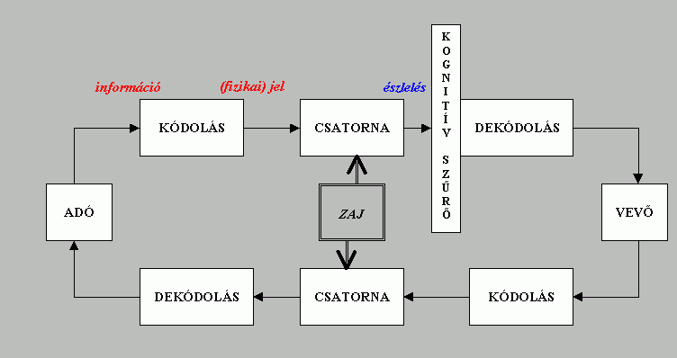

Az információáramlás modellje
Egy számítógépes hálózat kialakításakor az összekapcsolt számítógépek közötti kommunikációt lehetővé tevő átviteli közeg mellett különböző hálózati eszközöket használhatunk. A hálózati eszközök az átviteli közegen keresztül terjedő fizikai jeleket továbbítják, felerősítik, átalakítják.
